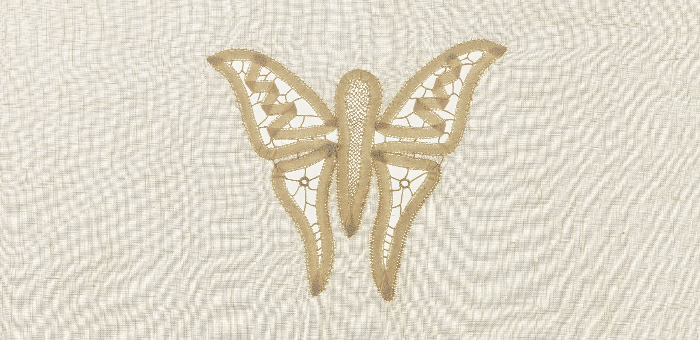
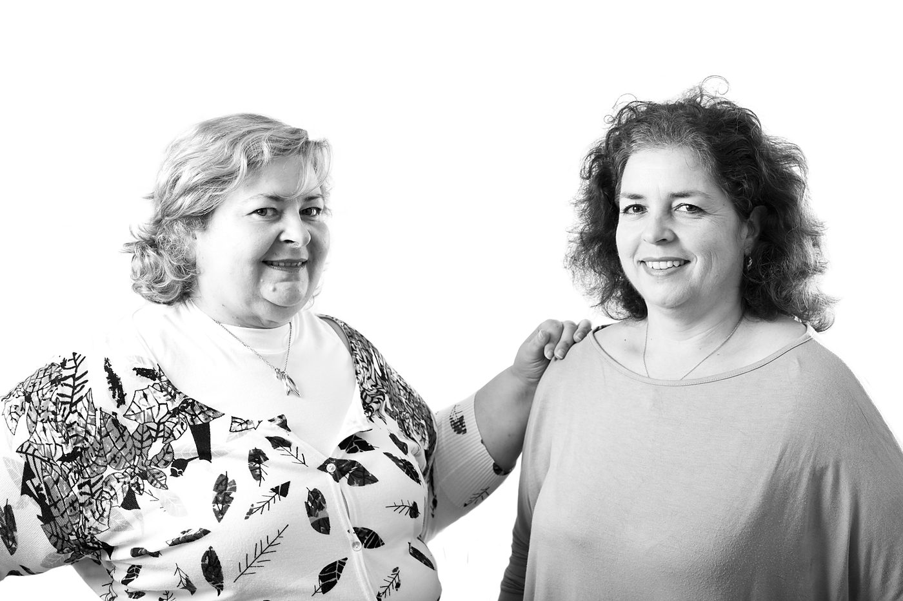
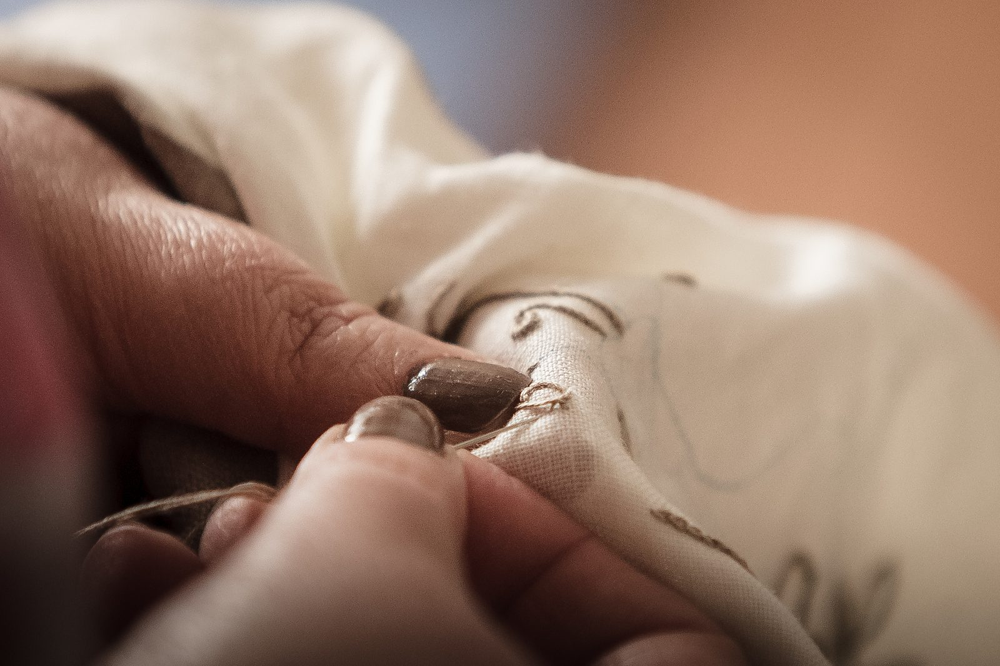
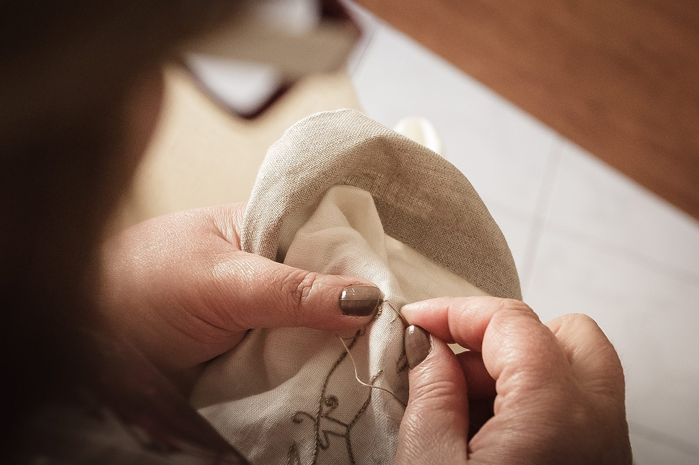
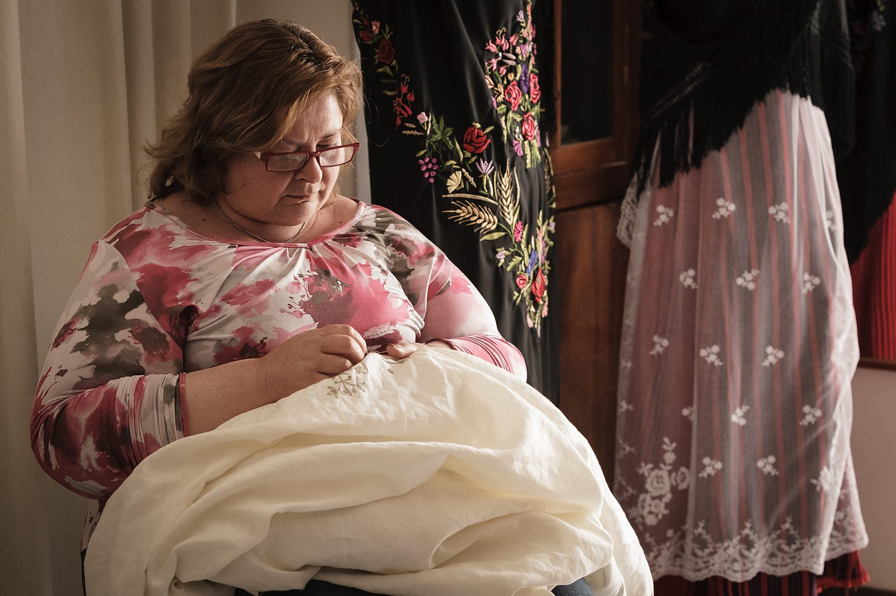
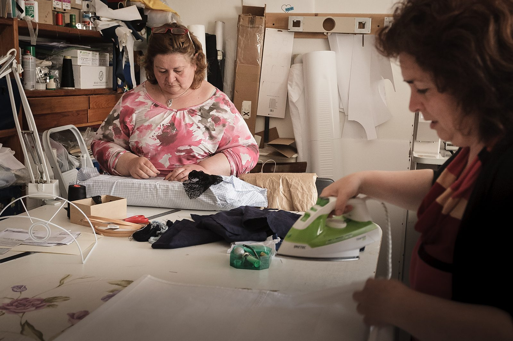
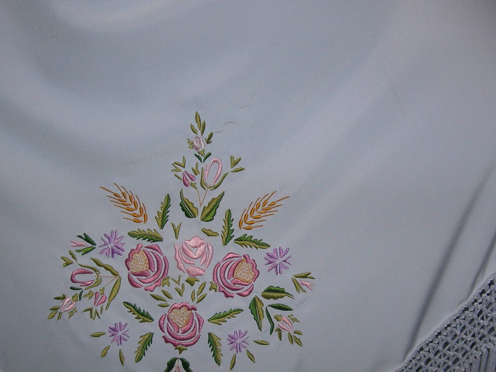

L'Isola del Ricamo
Ricamo a mano · le sorelle Garau
Decimomannu, a venti chilometri da Cagliari
Fotografie dalla vetrina dell'artigianato artistico della Regione Sardegna e dal sito de L'Isola del Ricamo. Restano di proprietà dell'attività.

Chi siamo
Due sorelle, un mestiere imparato in casa
«Sin da bambine abbiamo preso dimestichezza con ago, filo e uncinetto, manualità apprese da nonna e mamma.»
Paola Garau, intervista pubblicata il 21 settembre 2018
Paola e Daniela Garau hanno dato vita a L'Isola del Ricamo nel 2005, a Decimomannu. La ditta è individuale ed è intestata a Paola.
Dopo la famiglia sono venuti i corsi professionali, e con loro le tecniche nuove: «Abbiamo migliorato le tecniche e ne abbiamo apprese di nuove».
Oggi il lavoro guarda in due direzioni insieme: «Siamo alla continua ricerca di tecniche, materiali e disegni per ampliare la collezione con nuovi stili oppure reinterpretando antichi manufatti».
La mano
Si fa a mano, e si vede da vicino
La produzione è in prevalenza a mano, in parte a macchina. Quello che non cambia è il risultato: «Ma i nostri sono tutti “pezzi unici”, dagli abiti tradizionali agli arredi per la casa».





I punti
Quello che sappiamo fare, detto con i suoi nomi
Le lavorazioni si eseguono manualmente su tessuti naturali: lana, lino e cotone, e su tessuti leggeri come organza di seta, tulle di cotone e tutti i tipi di seta.
- Tutti i punti di ricamo classici, in bianco e a colori
- Punti di sfilatura, orlo a giorno e smerli
- Ricami a fili contati: punto antico e retini di fondo
- Trine e chiacchierino
- Trine ad ago e a fuselli
- Lavorazioni a nodi, come il macramè
- Ricami e pizzi con filati metallici e pietre
- Ricami in filigrana d'oro e d'argento
«Corredo da sposa, sicuramente, poi tovaglie, tende, copriletti e paramenti per le chiese.»
Paola Garau, alla domanda su quali siano i manufatti più richiesti
Si lavora anche su misura: capi e accessori, arredi per la casa, costumi tradizionali sardi, arredi e paramenti sacri, corredini e bomboniere.
I pezzi
Ogni pezzo è unico
«Ogni pezzo è unico, frutto dello studio di antichi disegni, e di una ricerca accurata dei materiali, delle linee, dei colori, utilizzando tessuti preziosi come i broccati, le sete, le lane e i velluti non comunemente disponibili in commercio.»
Il marchio
Il segno è già suo
Una G dentro un anello di cerchi intrecciati, e la sagoma della Sardegna al posto della «o» di «Isola»: una lettera per colore.
È il marchio che sta sul sito de L'Isola del Ricamo, ripreso da lì. È il motivo per cui in questa pagina non c'è nessun segno inventato.
Dove siamo
Siamo a Decimomannu
Molti dei pezzi si fanno su misura: corredi, tende, capi e accessori, costumi tradizionali, arredi e paramenti sacri.
«In occasione dei grandi eventi identitari ci arrivano richieste da tutti i paesi della Sardegna.»
Paola Garau, intervista pubblicata il 21 settembre 2018
Chiama 347 497 2889- Telefono347 497 2889
- Altro numero070 800 9743
- Emailisolaricamo@gmail.com
- ComuneDecimomannu (CA)
- OrariDa confermare